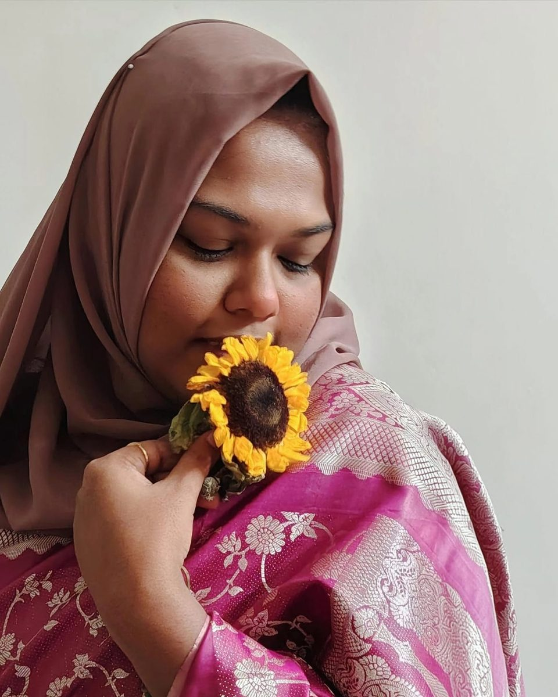

Ideas
What we create, explore & imagine.
Growing Ideas, People & Perspectives.
A space to explore ideas, grow people and see the world differently.


About
I'm Sabekunnahar Iqra, a Political Science graduate of the University of Barishal (MSS ongoing). I facilitate, train and mentor young people, and lead community and women-empowerment work in Barishal.
Meaningful change begins with meaningful growth.
The Three Territories
What we create, explore & imagine.
Who we grow with, learn from & stand for.
How we understand, question & engage with the world.
Growth Philosophy
New thoughts, questions and possibilities.
Ideas connect with people's experiences, needs and realities.
Understanding deepens and we begin to see differently.
People join conversation, community, civic life and meaningful action.
From this engagement, the possibility of change is born.
Impact
people reached online
joined in person
women trained · ReCraft
Solution Hunt 2.0
trainings joined since 2022
Journey
Tap a role for details
Interactive sessions on social issues, youth leadership and development; engaged diverse participants and encouraged active participation.
Training on leadership, teamwork and social awareness; mentored young participants to build confidence and communication skills.
Led and coordinated ambassador teams for youth-engagement activities; strengthened team performance through guidance and motivation.
Youth-driven sustainability and recycling project; coordinated volunteers; trained 15 women living in Barishal slum areas.
Designed a women-leadership awareness campaign; surveyed women leaders from 10 clubs at the University of Barishal; organised an art competition on women empowerment, connecting 150 people in person and 2,500+ online.
Leadership & Recognition
Areas of Focus
Core Values
Think Deeply. Care Genuinely. Create Meaningfully. Speak Responsibly.
Education
Connect
Invite me for